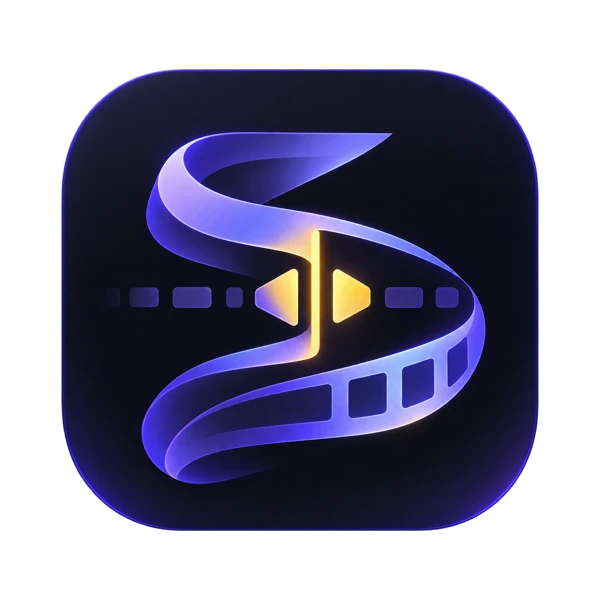

视频创作需要从参考片提炼方法，再把新文案、素材和包装安排成自己的作品，分析与制作之间存在大量手动整理。
SUOJIAN / VIDEO ANALYSIS / CREATIVE WORKBENCH
溯剪从参考片，走向新作品
从一条参考视频中梳理镜头、字幕与节奏，再结合自己的文案和素材推进制作。将参考片分析、分镜创作、素材剪辑与审片连接在同一套本地工作流程里。
持续开发迭代中
工具开发实践参考视频分析人机协作剪辑工作流本地浏览器工作台
把“看懂参考片”与“生成新作品”分开组织，让分析结果成为可核对、可调整的制作参考，再逐步进入创作与交付。
已公开 Windows 本机源码快照，涵盖参考分析、分镜创作、素材剪辑与审片。功能持续迭代，实际能力取决于本机环境与配置。
PRODUCT STRUCTURE / SECTION 01
三个环节，连接分析与制作
以参考片分析为起点，根据创作任务进入视觉分镜或素材剪辑，最后回到预览、确认与交付。
读取参考视频，展示镜头、字幕、声音与节奏候选，形成可查看的剪辑蓝图，组织新脚本方案。
围绕不同视频主题与动画讲解组织分镜、视觉风格和模板，提供视觉创作与渲染相关组件。
登记本地素材、选择候选镜头、安排字幕和声音包装，推进预览、质检、审片与交付准备。
CREATIVE WORKFLOW / SECTION 02
把参考，转化为可执行的方案
将参考片的观察结果落实到新脚本和素材安排中，每一步保留核对与调整的入口。
导入并分析参考片
读取视频信息与镜头切点，整理字幕、声音和粗略节奏等候选信息。
对照原片核对
在播放器与时间线之间查看、定位和比较，确认字幕、镜头和声音标记。
准备新文案与素材
根据任务调整分镜、画面顺序、字幕与声音包装，组织成自己的制作方案。
预览、审看与交付
生成预览并处理检查提示，按实际流程准备成片或基础剪映草稿，继续人工编辑和审看。
PRODUCT DECISIONS / SECTION 03
让分析结果可理解、可复核
围绕创作者的判断过程组织界面，让结构化信息能够与原片和实际制作动作连接。
边播放，边查看剪辑结构
解析时可播放原片；时间线支持缩放、横向导览和定位，镜头悬浮信息提供制作方式初判与分工建议。
参考蓝图与新作品分开保存
分别组织参考片分析和新脚本方案，避免把原片信息直接等同于新作品的素材与字幕安排。
将识别结果作为候选信息
分别查看语音识别、画面文字与字幕候选及其冲突，通过对照原片修正误识别，再服务后续创作。
在确认与审片之后交付
制作流程保留文案、画面、包装与完整审片的人工确认环节；最终输出取决于实际制作路线与可用环境。
STATUS & REFLECTION / SECTION 04
持续完善创作流程
这项实践展示了我对视频创作流程、工具衔接与交互组织的持续探索。目前仍处于开发迭代阶段。
当前形态：运行在 Windows 本机，通过浏览器使用。仓库公开源码与安装入口，素材、模型和部分服务需在使用环境中准备。
能力边界：镜头运动、字幕与声音等分析需要人工复核；复杂转场、花字和贴纸不能保证还原。剪映草稿的可编辑程度取决于生成路径、交付内容及剪映版本，部分集成仍待真实交付与实机验收。
后续关注：继续验证分析结果的可用性、模块之间的衔接，以及从预览到实际交付的一致性。模板代码存在与完成实际制作验收，需要分别判断。
项目说明依据公开仓库整理：项目概览 ↗ · 2026-11-11 更新记录 ↗。